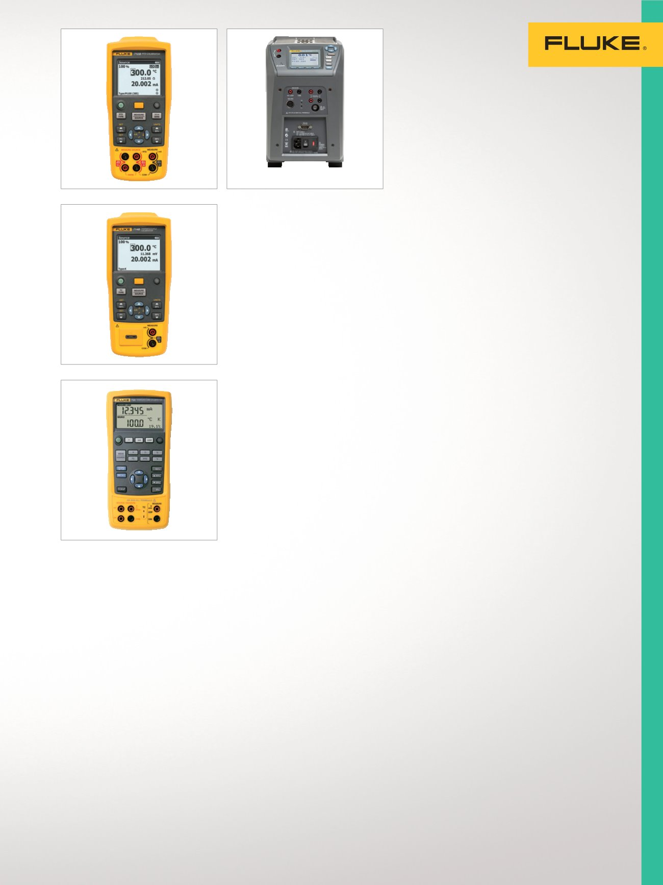

17
Calibración de temperatura
Calibradores de tem-
peratura portátiles
Sirven para calibrar trans-
misores de temperatura,
medidores de paneles y otros
dispositivos que se conectan
a los sensores
de temperatura.
Calibrador de procesos
de RTD 712
Proporciona un rendimiento, una
durabilidad y una fiabilidad exce-
lentes en una herramienta compacta,
ligera y fácil de transportar.
•
Mide la temperatura de las salidas
de los sensores RTD
•
Simula la salida de RTD
•
Mide RTD adicionales con la
función de medición de ohmios
•
Simula RTD adicionales con la
función de generación de ohmios
•
Calibración trazable NIST
Calibrador de termopares 714
Proporciona un rendimiento, una
durabilidad y una fiabilidad exce-
lentes en una herramienta compacta,
ligera y fácil de transportar.
•
Mide la temperatura de las salidas
los sensores RTD
•
Simula la salida de termopares
•
Calibra los transmisores de
termopares lineales con la función
de generación en mV
•
Calibración trazable NIST
Calibrador de temperatura 724
Una herramienta potente y práctica
para medir y generar funciones que
permite comprobar y calibrar casi
cualquier instrumento de temperatura.
•
Mide RTD, termopares, ohmios y
voltios para comprobar sensores
y transmisores
•
Genera y simula termopares,
RTD, voltios y ohmios para calibrar
transmisores
•
Realiza pruebas de linealidad
rápidas con incrementos del
25 y del 100%
•
Calibración trazable NIST
Fuentes de
temperatura de
campo multifunción
Rápido, ligero, portátil y
con un control preciso de
la temperatura trazable a
los estándares nacionales.
Permite calibrar termopares,
RTD, PRT y otros sensores
de temperatura.
Calibrador de metrología de
campo de bloque seco 9142
Mejoramos la portabilidad,
velocidad y funcionalidad de los
entornos de procesos industriales.
•
Intervalo de temperatura
de –25 a 150 °C
•
Precisión de visualización de
±0,2 °C en todo el rango
•
Lector de dos canales incorporado
para PRT, RTD, termopares,
corriente 4-20 mA
•
Lector opcional del termómetro
de referencia incorporado
•
Calibración acreditada
Calibrador de metrología de
campo de bloque seco 9143
Mejoramos la portabilidad,
velocidad y funcionalidad de los
entornos de procesos industriales.
•
Intervalo de temperatura de
33 a 350 °C
•
Precisión de visualización de
±0,2 °C en todo el rango
•
Lector de dos canales incorporado
para PRT, RTD, termopares,
corriente 4-20 mA
•
Lector opcional del termómetro
de referencia incorporado
•
Calibración acreditada
Horno de metrología
de campo 9144
Calibración de precisión con índices
rápidos de rampa de subida de
temperatura para los entornos de
procesos industriales.
•
Intervalo de temperatura de
50 a 660 °C
•
Calentamiento hasta los 660 °C
en 15 minutos
•
Precisión de visualización desde
± 0,35 °C a 420 °C hasta
± 0,5 °C a ± 660 °C
•
Lector opcional del termómetro
de referencia incorporado
•
Calibración acreditada
712
724
9142/9143/9144
714